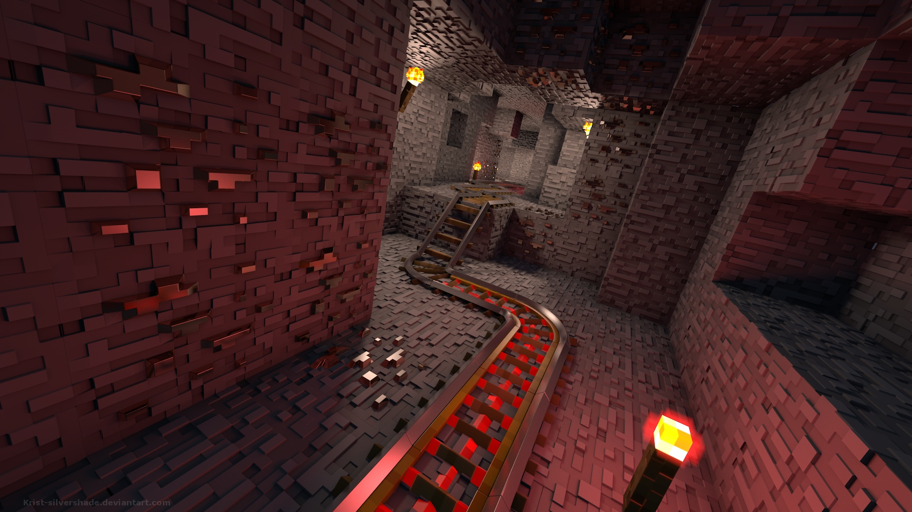
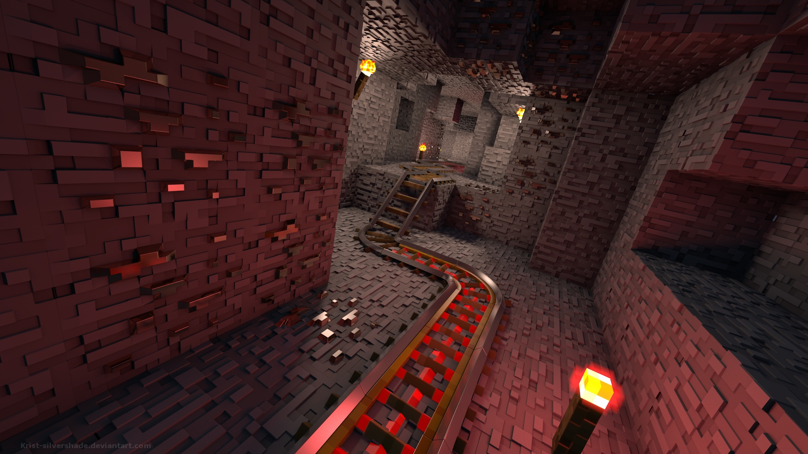

各种景色
《我的世界》中充满无限可能，也有着数不胜数的景色。
 


在我的世界玩家中，存在着一个数量极为庞大的群体，那就是建筑党，而我的世界能如此火爆也同样归功于建筑党玩家的活跃，
毕竟在游戏中，方块才是整个游戏的核心，而方块用在建筑中简直再合适不过了。
洛杉矶城
这是一个现代城市作品，是由一位日本玩家一人制作并上传的，一个日本玩家制作一个美国城市，
那是需要很丰富的阅历的，最重要的是，这个城市作品非常的精致，有很多细致的高楼大厦，
甚至还有郊区村庄等，如果要问起来为什么选择洛杉矶？可能因为这个玩家也喜欢玩GTA吧！
格林菲尔德
这是一个在2015年由玩家The jestr发起的一个现代城市建筑，毕竟现代建筑才是目前建筑圈的主流，
不过这个建筑群并不是由他一人完成的，后期他组织了团队共同参与制作完成，
它的特点就是多了很多真实感，加入了材质和光影包，由于比较早，因此博得了大量的关注。
Him城堡
这是Hypixel战斗服务器在2012年11月推出的一个战斗地图，由于当时关于HIM的传闻甚嚣尘上，
因此官方随即推出这个地图，迎合玩家需要，立即引来玩家的热捧，
在这个建筑中加入了特殊的方块材质，让城堡看起来更为阴森、神秘。

SS级奥古斯塔维多利亚1889号巨轮
对，你没有看错，这个巨轮的全称就是这么长，这是19世纪美国制造的世界最大号远洋豪华客轮，
游戏复刻作品由玩家Drash2005独自用了几周的时间完成，里面完美还原了客轮中的设施结构，
由于细节刻画非常的详细，因此一时间获得了极大的关注。
星际迷航
这是一位喜欢星际迷航的建筑党的作品，它是模仿进入黑暗系列打造的星际飞船，
由玩家Pokedude809建造，遗憾的是没有完成内部的搭建，
不过单从外观来看已经足够惊艳了。